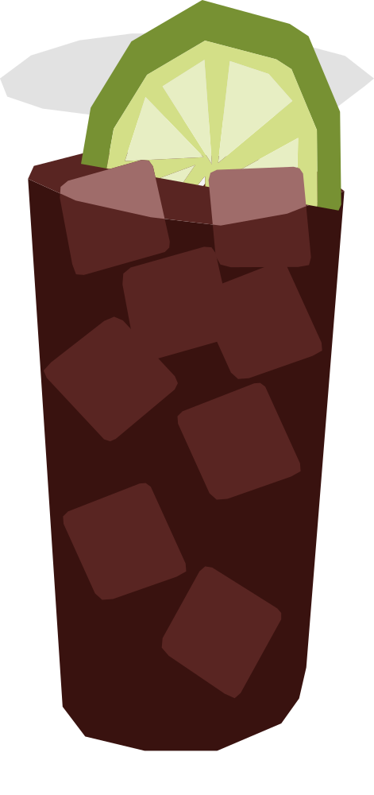

¿Qué mezclamos ahora?
Combina el ron Bundaberg, destilado en Queensland desde 1888 a partir de melaza de caña de azúcar local, con Coca-Cola. Se convirtió en la mezcla más popular y culturalmente arraigada de Australia, comparable en importancia social al Cuba Libre cubano.
RECETA
- 50 ml Bundaberg Rum
- 150 ml Coca-Cola
- Hielo en cubos
- 1 Limón
- Llena un vaso con hielo
- Agrega el Bundaberg Rum y completa con Coca-Cola.
- Mezcla suavemente.
- Decora con una rebanada de limón
Vaso: Old fashioned / vaso bajo